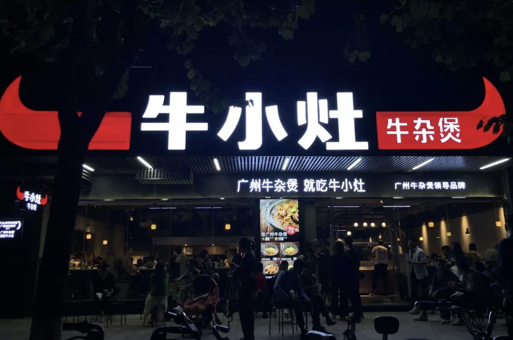
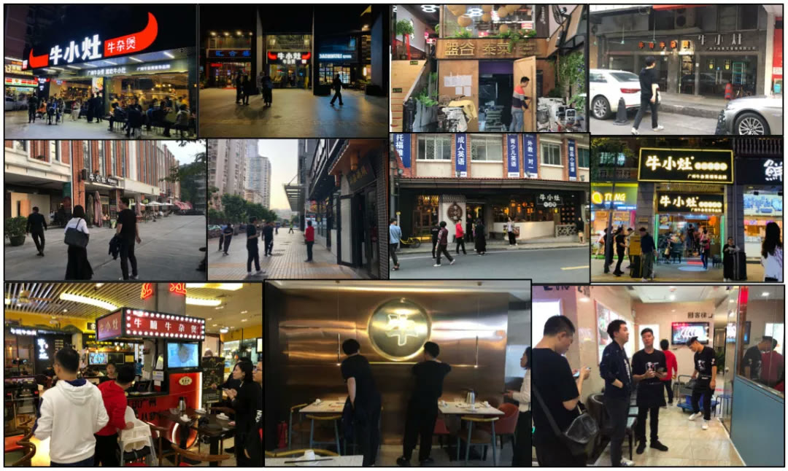
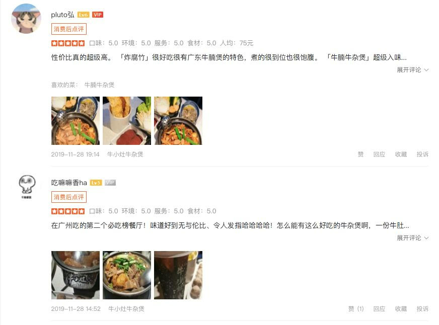
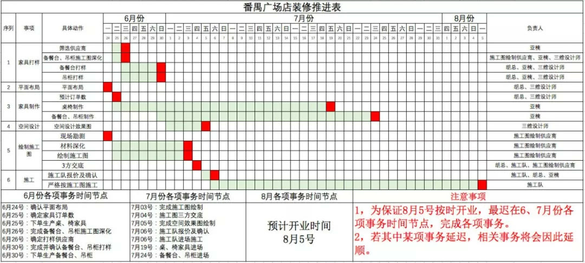

01 · 门头
街道是货架，门头就是包装
对于餐饮品牌，门头是影响进店的第一媒体。项目把牛角抽象并放大为红色大牛角，让品牌在复杂街道中被迅速发现和理解。

02 · 语言
把广州牛杂文化转化为品牌购买指令
“广州牛杂煲，就吃牛小灶”同时包含地域信用、品类和品牌名。话语上门头后，直接向路过顾客解释为什么进店。

03 · 改善
门店全面媒体化，直接检验生意结果
外立面、产品海报、价格与购买理由被重新组织。原案例记录，珠影店周营业额提升18%，体育西路店改造后环比提升31%。

04 · 产品
菜单与牛角锅共同降低选择成本
菜单集中主打产品、提供点单指南；牛角锅则让拳头产品成为顾客愿意拍照传播的品牌媒体。产品体验和品牌识别在餐桌上统一。

05 · 复制
用开店宝典把经验固化为标准
门头、物料、空间、灯光和执行流程被整理成开店手册，使新店不必重复试错。原案例记录，2019年底门店达到15家。
